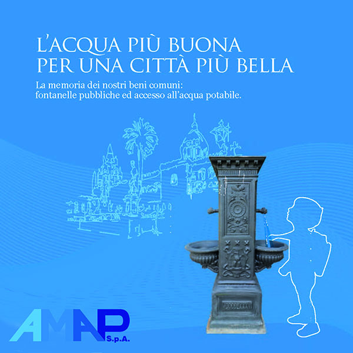
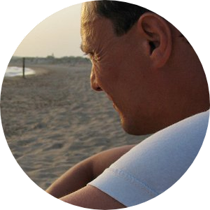
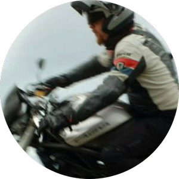

Quanta plastica si consuma...?
Dimensioni di una bottiglia tipo PET di 2 litri
Bottiglia: Diametro 9 cm, Altezza 34 cm
Confezione: Fardello in plastica da 6 bottiglie termoretratte
Pallettizzazione: Bancali EPAL 80x120, 19 confezioni per strato, 4 strati per pedana,
76 confezioni per pedana, 456 bottiglie per pedana, altezza 150 cm
1 Tir trasporta: 34 bancali ovvero 14.136 bottiglie
1.500.000 bottiglie di plastica equivalgono a 3.290 bancali e 250.000 confezioni da 6 bottiglie: 106 Tir non entrerebbero in città.
Simulazione fotografica ed elaborazioni 3D
Se usi una fontanella, ti prendi cura del mondo. Milioni di bottiglie di plastica non verrebbero consumate.
Le foto utilizzate per la simulazione sono di:
Il progetto
I dati aperti a supporto di un'azione "politica".
Dati
Questo è un progetto che senza dati riutilizzabili sarebbe stato irrealizzabile. Li abbiamo semplicemente chiesti.
Analisi
"Le fontanelle sono lontane!". Abbiamo realizzata la mappa delle aree da cui si raggiungono a piedi in 5 minuti (no scuse).
L'impatto
Cambiare abitudini - "non bere più plastica" - è semplice. Farlo ha un impatto enorme che è possibile misurare.
Fonte dati:
Comune di Palermo – Ambiente - Dataset della dislocazione delle fontanelle per acqua potabile (AMAP).
Amap - Le Fontanelle di Palermo - Brochure sulle Fontanelle realizzata da AMAPSPA.

Licenza CC BY-SA 4.0 - Attribuzione - Condividi allo stesso modo 4.0 Internazionale (CC BY-SA 4.0).
Disclaimer: Le informazioni visibili e condivise non comportano la visualizzazione di dati sensibili.
Data la natura esclusivamente informativa degli elaborati grafici e dei testi riportati, questi non costituiscono atti ufficiali.
Per accedere agli atti ufficiali si rinvia agli elaborati definitivi allegati alle specifiche deliberazioni.
Si declina ogni responsabilità sulla veridicità dei dati.
Credits
Il team di Fontanelle a Palermo
Andrea Borruso
Mumbling & spatializing
@aborruso

Ciro Spataro
Politic hacker
@cirospat

Giovan Battista Vitrano
Cartografia web
@gbvitrano
Web app progettata e sviluppata da @gbvitrano in collaborazione con Claude AI (Anthropic) che ha affiancato le scelte architetturali, l'ottimizzazione del codice e lo sviluppo delle funzionalità di visualizzazione geospaziale.